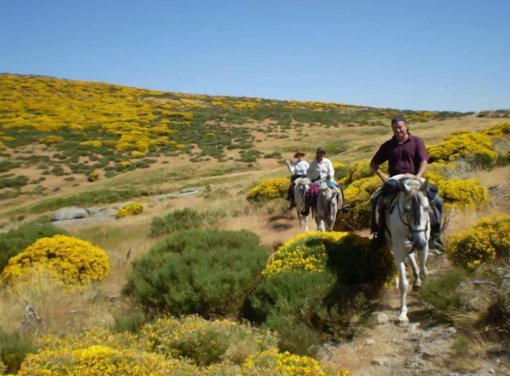
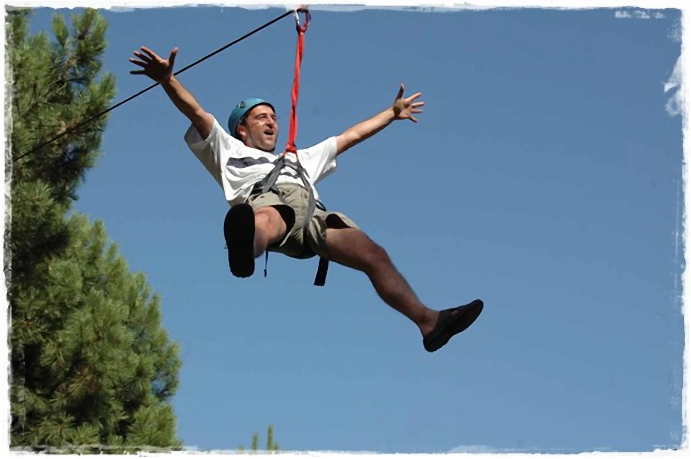
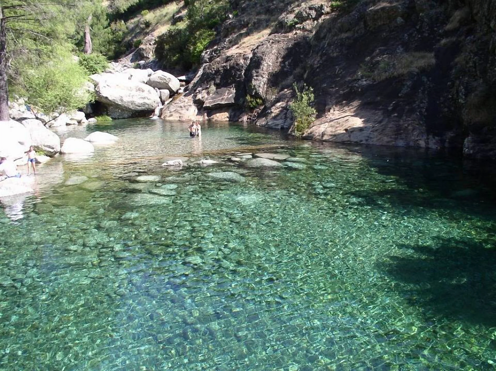

Piscina con vistas
Bañarse con las cumbres de Gredos enfrente.
Arenas de San Pedro · Sierra de Gredos
Seis casas de piedra y madera de castaño en plena sierra, con piscina, caballos y el Almanzor como paisaje.
La casa
La Lobera es un centro de turismo rural formado por seis casas de piedra y madera de castaño, repartidas en una finca al pie de la Sierra de Gredos. Se reserva por habitaciones o entera: escapadas en pareja, familias, retiros y grupos.
Qué vas a vivir
Bañarse con las cumbres de Gredos enfrente.

Entre retamas y encinas, por la falda de la sierra.

Para quien viene a desconectar… y a gritar un poco.

Pozas de agua limpia a un paso de la finca.
Galería
Fotos reales. Pasa el ratón para pararlas y pulsa cualquiera para ver la galería completa.
Vídeo aéreo
Opiniones
Media de 272 reseñas
de huéspedes reales
Espectacular sitio en la sierra de grados, naturaleza pura y mejores vistas
Una experiencia inolvidable
Un lugar precioso en una ubicación fenomenal. Los dueños se preocupan por la comodidad de sus huéspedes. La chef y su equipo adaptan la dieta a las expectativas de sus huéspedes. Higos, peras, manzanas y moras crecen a poca distancia. ¡Nos vemos pronto!
Espectacular sitio en la sierra de grados, naturaleza pura y mejores vistas
Ubicación
Paraje La Parrilla s/n · 05400 Arenas de San Pedro (Ávila)
Antes de venir
Sí. Se reserva por habitaciones o completa: ideal para familias, celebraciones, retiros y grupos.
Sí, las mascotas son bienvenidas. Avísanos al reservar.
Sí, una piscina exterior con vistas a la sierra para los días de calor.
Escríbenos por WhatsApp o llama al 670 64 35 21 y te confirmamos disponibilidad.
Demo preparada por Upscall · fotos y reseñas reales de La Lobera de Gredos